Chapter 18. Notebooks
Notebooks facilitate analysis, presentation, and sharing of Early Warning, Alert and Response System (EWARS) data using different widgets such as series chart, category chart, pyramid chart, map and table, enabling a variety of visualization possibilities. You can easily create a notebook by dragging and dropping widgets and configuring them further according to your requirements. The Notebooks feature saves both time and effort, and facilitates quick analysis. This analysis can be saved and is also updated automatically as data are updated. You can also share the notebook externally and internally.
To get started, please navigate to the Model account and then to a sample notebook inside it. Sample notebooks can be copied to your account to illustrate different functions, and can be modified according to your context.
18.1 Copying a sample notebook from the Model account
The example below sets out how to copy the Measles Case Study notebook from the Model account.
Step 1. Copy the Measles Case Study notebook to your account.
Select Menu > Configuration Transfer. Select Model account from the Source Account drop-down menu. The system displays the List of transferable items.
Enter “Measles Case Study” in the search box > select Measles Case Study > click on the transfer
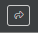
icon > click on Confirm, and the notebook is copied to your account.
Step 2. View the Measles Case Study notebook.
- Select Menu > Notebooks > click on Measles Case Study under My Notebooks, and the notebook is visible, as shown below:
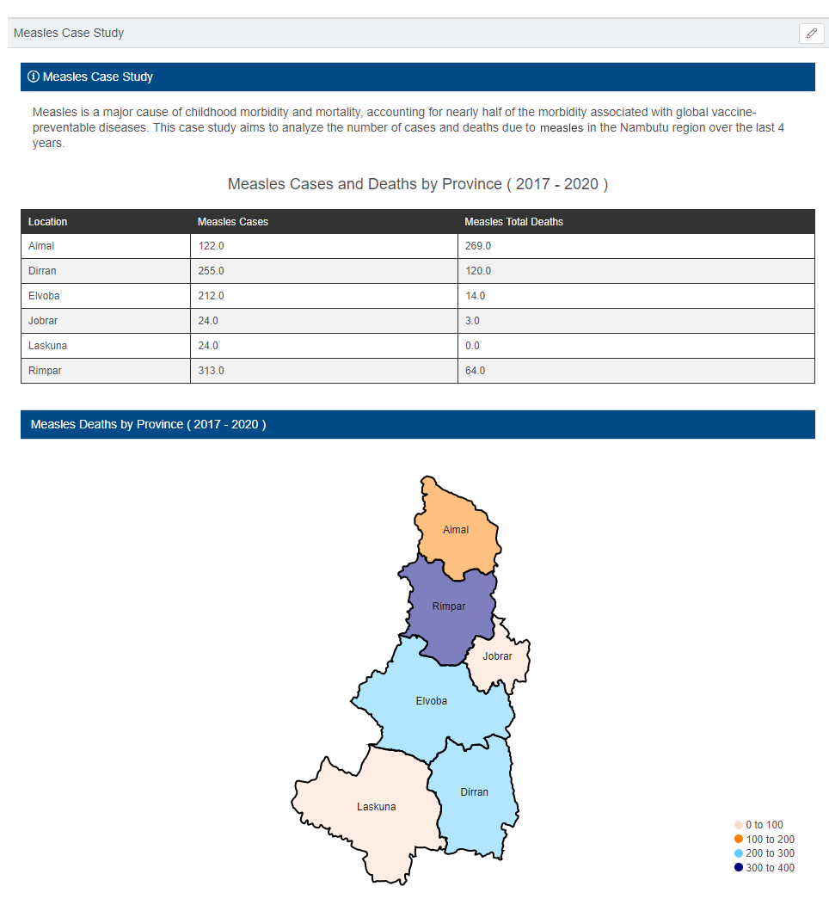
18.2 Editing the sample notebook
For demonstration purposes, this guide uses the example of removing the category chart from the Measles Case Study notebook and adding a pyramid chart to it.
Step 1. Remove the category chart from the Measles Case Study notebook.
- Select Menu > Notebooks > select Measles Case Study under My Notebooks. Click on the edit
 icon > scroll down in the widget configuration section and look for the category chart, as shown below:
icon > scroll down in the widget configuration section and look for the category chart, as shown below:
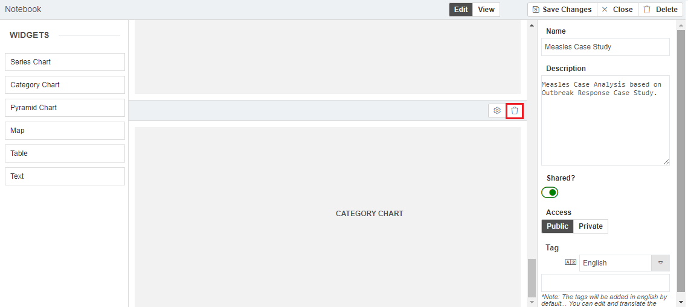
- Click on the delete
 icon of the Category Chart > click on Save Change(s), and the chart is removed.
icon of the Category Chart > click on Save Change(s), and the chart is removed.
Step 2. Add a pyramid chart to display health facility-wide measles cases for Nambutu for 2017 to 2020.
Select Menu > Notebooks > select Measles Case Study under My Notebooks > click on the edit
icon, and the notebook opens in edit mode.Drag and drop a Pyramid Chart from the left-hand side to the widget section in the middle, and the chart is added.
Click on the settings
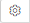
icon of the pyramid chart under the Settings tab.Enter the Chart Title “Measles cases by health facility (2017–2020)” > set Aggregation as Yearly > set Period as “2017-01-01” to “2020-12-31” > set Title, Export, Navigator and Legend as Show > set Zoom as enabled > enter the chart height as 500 px.
Click on the Data tab > click on Add Series > click on the edit
icon. Enter the Title “Total measles cases” > set Location Specification as Generator > set Generator parent location as Nambutu (Country) > select Province from the Generator location type drop-down menu > set Location Status as Active > set Data Source as Indicator > set Indicator source as Measles total > set Period as Inherit.Click on Save Change(s).
Click on View, and the screen below appears:
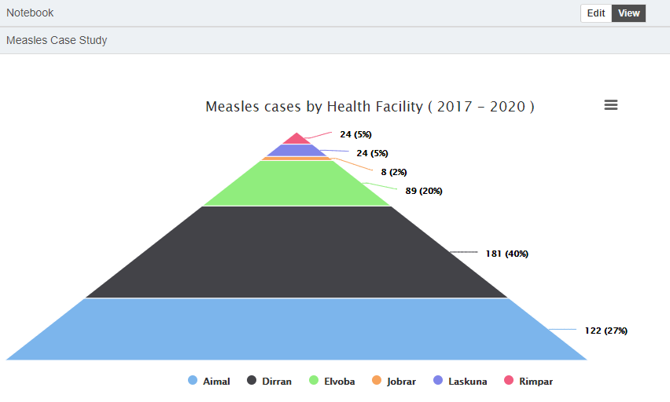
18.3 Creating a notebook
To create a notebook easily by dragging required widgets and then configuring them, follow the steps below.
- Select Menu > Notebooks > click on Create Notebook, and the notebook design screen opens, as shown below:
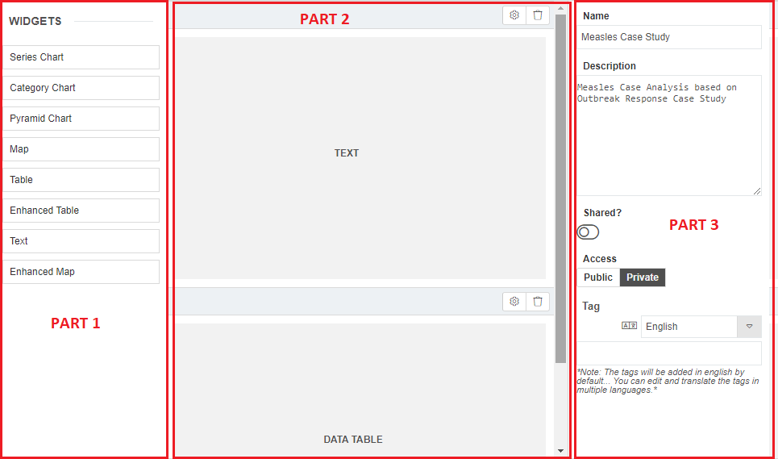
- Enter the general settings of the notebook (Part 3 in the screenshot), then drag the desired widgets from Part 1 to Part 2 and configure them as set out as below.
Step 1. Name a notebook, and configure its general settings.
Enter the Name (e.g. “Measles Case Study”) at Part 3 in the screenshot > enter a Description (e.g. “Measles case analysis based on outbreak response”)
Turn on Shared to share the notebook with other users of your account, and the notebook is visible under the Shared tabs of those users.
Set Access as public or private to allow or prevent access to the notebook through the notebook link.
 Note: the steps below show how to configure the widgets. For more detailed information on configuring widgets, refer to Chapter 17. Widgets and their configuration. Note: the steps below show how to configure the widgets. For more detailed information on configuring widgets, refer to Chapter 17. Widgets and their configuration. |
Step 2. Add a text widget to display information on the Measles Case Study notebook.
Drag and drop a Text widget from the list at the left-hand side to the middle section of the notebook > click on the settings icon.
Enter the Widget Title “Measles Case Study” > enter the relevant Widget Icon.
Enter the Header Colour as (#004a87) > enter the Header Text Colour as “#fff”(white).
Enter Content: “Measles is a major cause of childhood morbidity and mortality, accounting for nearly half of the morbidity associated with global vaccine-preventable diseases. This case study aims to analyse the number of cases and deaths due to measles in the Nambutu region over the last 4 years.”
Click on Save Change(s).
Click on View, and the screen below appears:
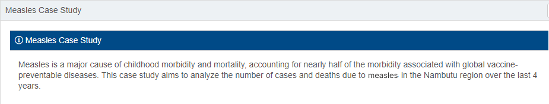
Step 3. Add a table widget to display provincial measles cases and deaths for Nambutu from 2017 to 2020.
Drag and drop a Table widget from the list at the left-hand side to the middle part of the notebook > click on the settings icon.
Enter the Title “Measles Cases and Deaths by Province (2017–2020)”.
Set Location Specification as Generator > set Show parent column? as No > set Parent location as Custom > set Generator parent location as Nambutu (Country) > select Province from the Generator location type drop-down menu > set Location Status as Active.
Set Column Header as Show.
Set Hide Rows with 0 or no data as No > set Sorting column as Location Name Asc.
Click on the Data tab > click on Add Column > click on the edit
icon.Enter the Title “Measles Cases”.
Set Source Type as Indicator > select Indicator Source as Measles Total > set Reduction as Sum > set Period as “2017-01-01” to “2020-12-31”.
Add another column for measles total deaths.
Click on Add Column > click on the edit
icon.Enter the Title “Measles Total Deaths”.
Set Source Type as Indicator > select Indicator Source as Measles Total Deaths > set Reduction as Sum > set Period as “2017-01-01” to “2020-12-31”.
Click on Save Change(s).
Click on View, and the screen below appears:

Step 4. Add a map widget to display total measles deaths data by province for Nambutu from 2017 to 2020.
Drag and drop a Map widget from the list at the left-hand side to the middle part of the notebook > click on the settings icon.
Enter the Title “Measles Deaths”.
Set Location as Of Type > enter “Nambutu” as the Location > select Province from the Location Type drop-down menu > set Location Status as Active.
Set Query Type as Indicator > select the Indicator Measles Total Deaths > set Reduction as Sum > set Period as “2017-01-01” to “2020-12-31”.
In Thresholds, click on the add
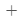
icon > enter “0 to 100”, choose (#fddbc7) > enter “100 to 200”, choose #FF8000 > enter “200 to 300”, choose (#66CCFF) > enter “300 to 400”, choose #000080.Set Legend as Show > set Opacity as 0.5 > set Base Geometry Colour as white (#fff) > set Background Colour as white (#fff) > set Stroke Colour as black (#000) > set Stroke Width as 2 > set Width as 100 > set Height as 500.
Set Show labels as Yes > select the Labelling style Default > enter Label Font Size as 12 > choose Label Colour (#000).
Click on Save Change(s).
Click on View, and the screen below appears:
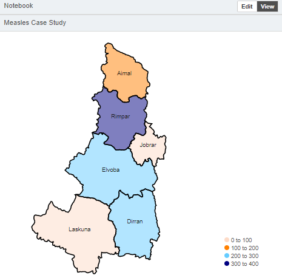
Step 5. Add a series chart to display monthly total measles cases and monthly total measles deaths for Nambutu from 2017 to 2020.
Drag and drop a Series chart widget from the list at the left-hand side to the middle part of the notebook > click on the settings icon.
Enter the Chart Title “Measles – Cases and Deaths (2017–2020)” > set Aggregation as Monthly.
Set the period as “2017-01-01” to “2020-12-31”.
Set Title as Show > set Export as Show > set Zoom as Enabled > set Navigator as Hide > set Legend as Show.
Set Y Axis title as Show > set X Axis title as Show > set Chart height as 400.
Click on the Data tab > click on Add Series > click on the edit
icon.Enter the Title “Total Measles Cases”.
Set Location Specification as Specific Location > select Nambutu (Country) from the Location drop-down menu.
Set Data Source as Indicator > select Measles Total from the Indicator drop-down menu> set Period as Inherit.
Set Style as Line > select Colour as > enter Line Width “3” > set Line Style as Solid > enter Marker Radius “3” > set Marker style as Circle.
Add another series for measles total deaths.
Click on Add Series > click on the edit
icon.Enter the Title “Total Measles Deaths”.
Set Location Specification as Specific Location > select Nambutu (Country) from the Location drop-down menu.
Set Data Source as Indicator > select Measles Total Deaths from the Indicator drop-down menu > set Period as Inherit.
Set Style as Line > select Colour as > enter Line Width “3” > set Line Style as Solid > enter Marker Radius “3” > set Marker style as Circle.
Click on Save Change(s).
Click on View, and the screen below appears:
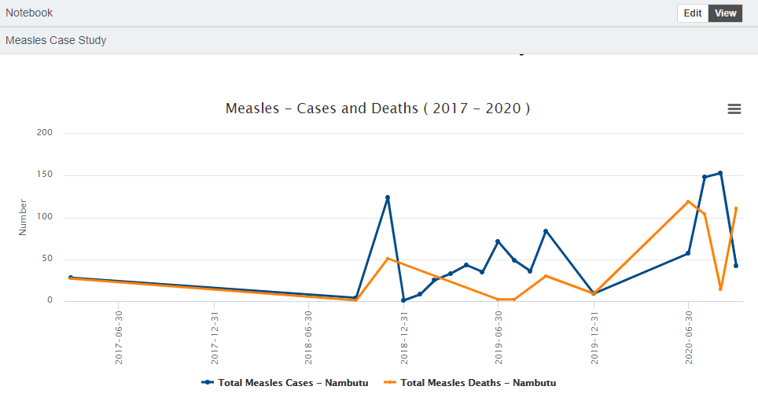
Step 6. Add a pie chart to display measles under 5 cases, measles 5 and over cases and measles total cases for Nambutu from 2017 to 2020, aggregated by year.
Note: in this case, it is recommended that you group the category chart by indicators.
Drag and drop a Category widget from the list at the left-hand side to the middle part of the notebook > click on the settings icon.
Enter the Chart Title “Measles data distribution (2017–2020)” > set Sample Interval as Yearly > set Group by Indicators as Yes > set Period as “2017-01-01” to “2020-12-31”.
Set Chart Title as On > set Legend as Show > select Legend position as Bottom > select Chart style as Default > select Slice Ordering as Category Title Ascending.
Add a category for measles cases under 5.
Click on the Data tab > click on Add Category > click on the edit
icon.Enter “Measles under 5 cases” as the Slice Label > set Colour as white (“#ff”).
Set Location spec. as Specific Location > select Nambutu (Country) from the Location drop-down menu.
Set Source Type as Indicator > select Measles Under 5 from the Indicator Source drop-down menu > set Reduction type as Sum > set Period as Inherit.
Add a category for Measles cases 5 and over.
Click on Add Category > click on the edit
icon.Enter “Measles cases 5 and over” as the Slice Label > set Colour as white (“#ff”).
Set Location spec. as Specific Location > select Nambutu (Country) from the Location drop-down menu.
Set Source Type as Indicator > select Measles 5 and over from the Indicator Source drop-down menu > set Reduction type as Sum > set Period as Inherit.
Add a category for Measles deaths.
Click on Add Category > click on the edit
icon.Enter “Measles deaths” as the Slice Label > set Colour as white (“#ff”).
Set Location spec. as Specific Location > select Nambutu (Country) from the Location drop-down menu.
Set Source Type as Indicator > select Measles Total Deaths from the Indicator Source drop-down menu > set Reduction type as Sum > set Period as Inherit.
Click on Save Change(s).
Click on View, and the screen below appears:
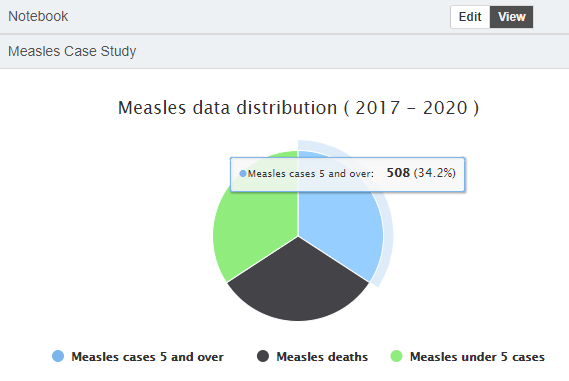
Step 7. Add a pyramid chart to display annual measles cases for Nambutu from 2017 to 2020.
Drag and drop a Pyramid chart widget from the list at the left-hand side to the middle part of the notebook > click on the settings icon.
Enter the Chart Title “Measles cases (2017 – 2020)” > set Aggregation as Yearly.
Set the Period as “2017-01-01” to “2020-12-31”.
Set Title as Show > set Export as Show > set Zoom as Enabled > set Navigator as Show > set Legend as Show.
Enter the Chart width as “500”.
Enter the Chart height “500”.
Click on the Data tab > click on Add Series > click on the edit
icon.Enter the Title “Total measles cases”.
Set Location Specification as Specific Location > select Nambutu (Country) from the Location drop-down menu.
Set Data Source as Indicator > select Measles total from the Indicator drop-down menu > set Period as Inherit.
Click on Save Change(s).
Click on View, and the screen below appears:
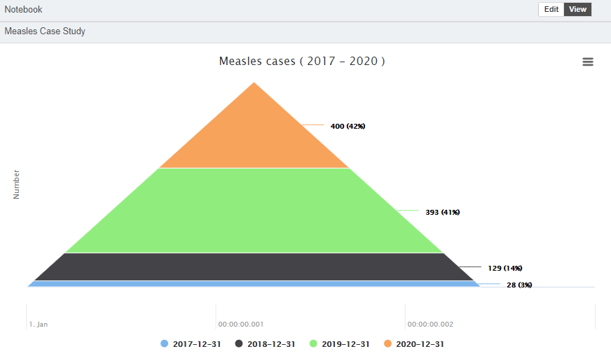
- Click on Save Change(s), and the notebook is visible under My Notebooks.
18.4 Viewing a notebook
You can view notebooks under two tabs: My Notebooks and Shared as shown below:
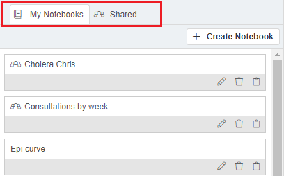
My Notebooks: All the notebooks created or copied by you are visible under this tab.
Shared: All the notebooks shared by other users of the EWARS account are visible under this tab.
- Select Menu > Notebooks. Click on either the My Notebooks or the Shared tab, and the list of notebooks is visible. Click on the name of the notebook to view it.
18.5 Downloading a notebook
You can download the notebook as a PDF or as an Excel file.
- Select Menu > Notebooks > My Notebooks. Click on a notebook from the list (e.g. Measles Case Study) > click on the download icon.
Either click on Export as PDF to download the notebook as a PDF file
Or click on Export as Excel to download the notebook as an Excel file.
| Note: you can download the notebook as and when required, as the data are updated in real time on the basis of the selected configurations. |
18.6 Editing a notebook
Notebooks visible in the My Notebook tab can be edited, but you cannot edit notebooks visible in the Shared tab.
- Select Menu > Notebooks > My Notebooks. Click on a notebook from the list (e.g. Measles Case Study) > click on the edit icon, and the notebook is open for editing. Make the desired changes > click on Save Change(s), and the notebook is edited.
18.7 Deleting a notebook
Notebooks visible in the My Notebook tab can be deleted, but you cannot delete notebooks visible in the Shared tab.
- Select Menu > Notebooks > My Notebooks. Click on the delete icon in the notebook (e.g. Measles Case Study) > click on Confirm, and the notebook is deleted permanently.
18.8 Sharing a notebook via a public link
You can share a notebook with others via a public link.
Step 1. Set public access to the notebook.
- Select Menu > Notebooks > My Notebooks. Click on the notebook (e.g. Measles Case Study) > click on the edit icon in Notebook Settings > set Access as Public > click on Save Change(s).
Step 2. Share the universal resource locator (URL) or link to the notebook.
Go to the Measles Case Study notebook > click on the copy
 icon, and the URL is copied. Email the copied URL, and users can view the notebook by clicking on the URL/link received in the email.
icon, and the URL is copied. Email the copied URL, and users can view the notebook by clicking on the URL/link received in the email.This notebook link can also be shared via different mediums, and can be viewed via various browsers.
18.10 Copying or duplicating a shared notebook and viewing it
You can copy or duplicate notebooks visible in the Shared tab, which lists notebooks shared by other users of your account.
| Note: you cannot normally edit notebooks under the Shared tab, but if you need to, you have to first copy or duplicate the shared notebook. After doing so, it is available under the My Notebooks tab, where you can edit it. |
The steps below set out how to copy or duplicate a shared notebook and view it under the My Notebooks tab.
- Select Menu > Notebooks. Click on Shared > click on the duplicate
 icon of the notebook (e.g. Measles Case Study). Enter a new name for the notebook > make the required changes. Click on Save Change(s), and the notebook is copied under the My Notebooks tab, where it can be viewed.
icon of the notebook (e.g. Measles Case Study). Enter a new name for the notebook > make the required changes. Click on Save Change(s), and the notebook is copied under the My Notebooks tab, where it can be viewed.
The following chapter provides an overview of the Dashboards feature and helps you learn how to create them, facilitating the tracking, analysis and display of data, key performance indicators and more.